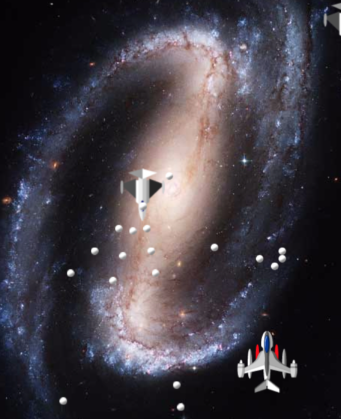

- 00 开篇词 跟我学，你也可以开发一款游戏！.md
- 复习课 带你梳理客户端开发的三个重点.md
- 第10讲 如何载入“飞机”和“敌人”？.md
- 第11讲 如何设置图像的前后遮挡？.md
- 第12讲 如何设置精灵的变形、放大和缩小？.md
- 第13讲 如何设置淡入淡出和碰撞检测？.md
- 第14讲 如何制作游戏资源包和保存机制？.md
- 第15讲 如何载入背景音乐和音效？.md
- 第16讲 如何在游戏中载入UI和菜单？.md
- 第17讲 如何用鼠标和键盘来操作游戏？.md
- 第18讲 如何判断客户端的网络连接？.md
- 第19讲 如何嵌入脚本语言？.md
- 第1讲 游戏开发需要了解哪些背景知识？.md
- 第20讲 脚本语言在游戏开发中有哪些应用？.md
- 第21讲 如何使用脚本语言编写周边工具？.md
- 第22讲 如何选择合适的开发语言？.md
- 第23讲 如何定制合适的开发协议？.md
- 第24讲 不可忽视的多线程及并发问题.md
- 第25讲 如何判断心跳包是否离线？.md
- 第26讲 如何用网关服务器进行负载均衡？.md
- 第27讲 如何制作游戏内容保存和缓存处理？.md
- 第28讲 热点剖析（一）：HTML5技术是如何取代Flash的？.md
- 第29讲 热点剖析（二）：如何选择一款HTML5引擎？.md
- 第2讲 2D游戏和3D游戏有什么区别？.md
- 第30讲 热点剖析（三）：试试看，你也可以编写一款HTML5小游戏！.md
- 第31讲 热点剖析（四）：安卓端和苹果端游戏开发有什么区别？.md
- 第32讲 热点剖析（五）：如何选择移动端的游戏引擎？.md
- 第33讲 热点剖析（六）：AR和人工智能在游戏领域有哪些应用？.md
- 第34讲 热点剖析（七）：谈谈微信小游戏的成功点.md
- 第35讲 热点剖析（八）：谈谈移动游戏的未来发展.md
- 第36讲 热点剖析（九）：谈谈独立开发者的未来发展.md
- 第3讲 游戏的发动机：游戏引擎.md
- 第4讲 底层绘图接口的妙用.md
- 第5讲 构建游戏场景的武器：地图编辑器.md
- 第6讲 从0开始整理开发流程.md
- 第7讲 如何建立一个Windows窗体？.md
- 第8讲 如何区分图形和图像？.md
- 第9讲 如何绘制游戏背景？.md
- 结束语 做游戏的过程就像是在雕琢一件艺术品.md
- 课后阅读 游戏开发工程师学习路径（上）.md
- 课后阅读 游戏开发工程师学习路径（下）.md
第30讲 热点剖析（三）：试试看，你也可以编写一款HTML5小游戏！
前两周，我分析了[HTML5的核心竞争力]以及[HTML5游戏的引擎]。选择好了HTML5引擎，我们就可以开始制作游戏了。
对于编写HTML5小游戏，你或许会很有兴趣，因为HTML5现在已然是一个潮流，而且利用引擎编写HTML5游戏已经变得相当方便。
如何选择一款引擎？
我选择的是比较容易上手的lufylengend引擎。为什么要选择这款引擎呢？因为它只需要下载一个压缩包，并且不需要特别繁琐的说明和设置就能直接上手，用作我们的教学示例是最合适的。
如果使用白鹭引擎或者Cocos-2d引擎这些比较有名的引擎，可能会有这些问题。
这些引擎从工具到套件都非常成熟，你直接下载一个引擎启动器或者组件管理器，就可以一应俱全地在启动器里面下载，配置到默认路径。但是，这些工具拥有纷繁复杂的界面，你连上手都要费一段时间，更别说短时间内熟练使用并制作出一款游戏。
这些引擎需要引入的库或者使用的方式极为系统，所以你需要系统地引入库文件，才可以使用。事实上我要做的示例，并不需要很多复杂的东西，你只需要跟我从头到尾走一遍，就能明白编写HTML5游戏是怎么回事。
这些引擎需要别的工具支持，比如node.js。作为新手来说，光配置node.js就是一项比较麻烦的工作。所以我选择了lufylengend引擎这一个比较“单纯的”引擎来作为教学引擎。
几个简单的说明
你可以从这个地址下载最新版本：https://github.com/lufylegend/lufylegend.js/archive/lufylegend-1.10.1.zip 。下载下来的安装包大约有30M大，解压缩后有36M左右。解压缩后，我们会看到一系列的js文件。
我先对这些文件做一些说明，并且对最基础的编程流程做一个简单的梳理。
压缩包内包含lufylegend-版本号.js和lufylegend-版本号.min.js这两个完整版本，还有lufylegend-版本号.simple.js和lufylegend-版本号.simple.min.js这两个缩减版本，其中带min字样的是去除了回车和空格的压缩版本。如果你使用JavaScript编程，缩减版本对于你来说再熟悉不过的了。
其中，simple缩减版本与完整版本的区别在于，它将LBox2d、LQuadTree、LTransitionManager、LoadingSample1、LoadingSample2、LoadingSample3、LoadingSample4、LoadingSample5等几个类与HTML5引擎的常用部分分离，缩减了引擎的体积。如果需要用到被分离的部分功能的话，可以手动进行加载。
随后，可以在HTML代码中将legend引擎的库件引入。调用LInit函数，初始化库件。然后开始游戏代码的编写。剩下，你只需要有一款合适的IDE就可以开始编程了。
对制作HTML5游戏来说，你首先要做的是，将游戏场景在浏览器中呈现出来。把Windows的窗体，从系统客户端程序搬到浏览器上，呈现的窗体从可执行文件变成了浏览器。从这个角度讲，浏览器担负了应用层的工作，浏览器本身担负了解释程序，并且渲染的过程，所以，从理论上讲，相同的游戏类型和游戏内容，HTML5游戏的渲染速度是比不上客户端游戏的渲染速度的。
一起动手制作吧！
很凑巧的是，lufylengend引擎也拥有一款打飞机demo。我们只需要在lufylegend引擎目录的examples/demo下，找到barrage目录。
这一款打飞机的游戏，打开后是这个样子。

这和我们之前讲述的内容非常类似。那我就借解释一下这款游戏的代码，来教你制作。
在目录下，有一个index.html，这就是游戏的开始页面。在这个页面下，我们先来看一下部分代码。
<script type="text/javascript" src="../load_lufylegend.js"></script>
<script type="text/javascript">
if(LGlobal.canTouch){
LGlobal.stageScale = LStageScaleMode.EXACT_FIT;
LSystem.screen(LStage.FULL_SCREEN);
}
</script>
<script type="text/javascript" src="./js/Main.js"></script>
如果你熟悉web编程，对于这些代码肯定非常熟悉。在开始的地方，我们看到载入的JavaScript代码是load_lufylegend.js，这个js文件包含在打飞机游戏的上一层目录，内部就只有一行代码。
document.write('<script type="text/javascript" src="../../../lufylegend-1.10.1.min.js"></script> ');
我们看到，在这个js文件内，包含了lufylegend的原始引擎文件。至于为什么要这么做，为什么要使用两个文件包含引擎，是因为这样可以保持游戏代码的干净。如果你要修改引擎的包含路径，不需要修改游戏本体文件，只需要修改load_lufylegend.js包含路径即可。
而LGlobal.canTouch这段话的意思是，如果是移动版本的话，设置缩放模式为适应屏幕，并且为全屏，代码是：
LSystem.screen(LStage.FULL_SCREEN)
最后，导入游戏脚本Main.js文件。
在Main.js里面，我们看到，它还包含了三个别的js文件，代码是这样。
imgData.push({type:"js",path:"./js/Global.js"});
imgData.push({type:"js",path:"./js/Bullet.js"});
imgData.push({type:"js",path:"./js/Plain.js"});
它包含了一个共有类Global.js、子弹类Bullet.js以及飞机类Plain.js。之后的代码是这样的。
loadingLayer = new LoadingSample1();
addChild(loadingLayer);
其中LoadingSample1是“载入进度条”类，我们可以在下面的代码看到载入的实现。
LLoadManage.load(
imgData,
function(progress){
loadingLayer.setProgress(progress);
},
function(result){
imglist = result;
removeChild(loadingLayer);
loadingLayer = null;
gameInit();
}
);
在载入结束后，就开始gameInit函数的调用，也就是游戏初始化。
function gameInit(event){
//游戏底层实例化
backLayer = new LSprite();
addChild(backLayer);
ctrlLayer = new LSprite();
addChild(ctrlLayer);
LSprite是引擎的基本显示列表构造，里面包含了显示内容的列表节点，addChild就是将显示内容添加到节点列表。
//添加游戏背景
bitmapdata = new LBitmapData(imglist["back"]);
bitmap = new LBitmap(bitmapdata);
backLayer.addChild(bitmap);
这几段代码就是将背景图片也添加到显示节点列表。
//得分显示
pointText = new LTextField();
pointText.color = "#ffffff";
pointText.size = 20;
pointText.text = point;
backLayer.addChild(pointText)
这是一个得分的显示，所以需要新建一个文本类，并设置颜色和大小，并将之放到显示节点的列表。
//加入玩家
player = new Plain("player",0,200,600,[5]);
backLayer.addChild(player);
我们需要新建一个玩家类。新建玩家，其实就是新建一个飞机类型，所以我们在这里看到一个plain类的创建。
这个创建函数的实现原型是这样的。
function Plain(name,belong,x,y,bullets)
你可能会觉得奇怪，Plain是什么意思，在它的demo里面，Plain是飞机的意思，然而可能是作者的一时疏忽或者是英文“捉急”，所以就把Plane写成了Plain。以下所有和飞机相关的代码都是Plain，虽然并不影响代码的运行，但是出于严谨考虑，我在这里更正一下，Plain等于Plane。
第一个参数是名字，第二个参数是飞机所属，表明是属于敌人还是玩家，随后两个参数（x,y）是飞机在2D画布上所显示的位置，最后一个bullets是子弹的数组。
//添加帧事件，开始游戏循环
backLayer.addEventListener(LEvent.ENTER_FRAME,onframe);
//添加控制事件
backLayer.addEventListener(LMouseEvent.MOUSE_DOWN,ondown);
backLayer.addEventListener(LMouseEvent.MOUSE_UP,onup);
}
在初始化的最后，我们需要添加鼠标事件，将鼠标事件LMouseEvent的鼠标上下操作事件都放入到事件侦听函数内：addEventListener。
看到这里，你不禁会问，按照我们所教学的，游戏应该会有一个大循环来完成游戏的显示、操作等内容。那这个循环在哪里呢？
事实上这个循环，就在上面这串代码中。
backLayer.addEventListener(LEvent.ENTER_FRAME,onframe);
其中，LEvent为事件类。和传统客户端游戏不同，在HTML5游戏引擎中，循环采用了事件代码来完成，只要你在侦听器函数中注册了事件，都会一帧一帧不停地调度这个事件，以此达到循环的效果。
在这里，注册的侦听事件函数就是onframe函数。查看它的源代码你可以看到onframe函数的实现细节，我就不在这里进行阐述了。
小结
今天，我们使用lufylegend引擎剖析了HTML5游戏的编写方式。我来总结一下。
HTML5游戏的启动页是一个HTML文件。这个文件包含引擎的js文件。在其他别的引擎中，也是使用类似的方式来加载引擎。包含了引擎，就可以针对引擎所封装的接口进行游戏的开发。
HTML5游戏的循环方式和传统游戏的循环方式不同。由于HTML5游戏引擎绝大部分是使用JavaScript脚本编写的，而JS本身就是以事件驱动的方式来工作的，所以使用事件驱动是HTML5游戏引擎的一个很大特点。我们在事件侦听函数中注册一个事件函数，在这个函数内编写“游戏循环”内的代码，就能起到传统游戏循环的作用。
在HTML5游戏中，我们几乎不需要关心图片的刷新或者清空操作。这些操作比之传统客户端游戏更为简洁，我们只需要关心游戏的图片呈现以及操作即可。
简单来说，HTML5游戏就是一种使用事件驱动模式并渲染在网页上的一种技术，省却了传统游戏的底层操控。你在制作的时候，可以把更多的关注点放在游戏逻辑和可玩性上。
最后，留一个小问题给你。
在类似这样的HTML5打飞机游戏中，碰撞检测是怎么做的呢？请结合我以前的讲过的内容给出一个答案。
欢迎留言说出你的看法。我在下一节的挑战中等你！
© 2019 - 2023 Liangliang Lee. Powered by gin and hexo-theme-book.